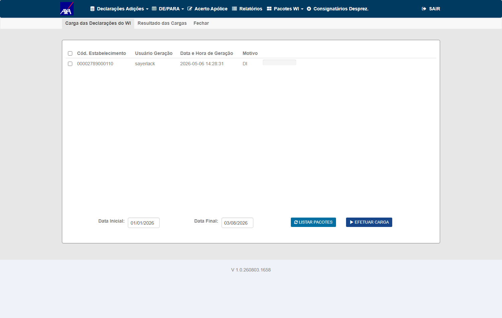
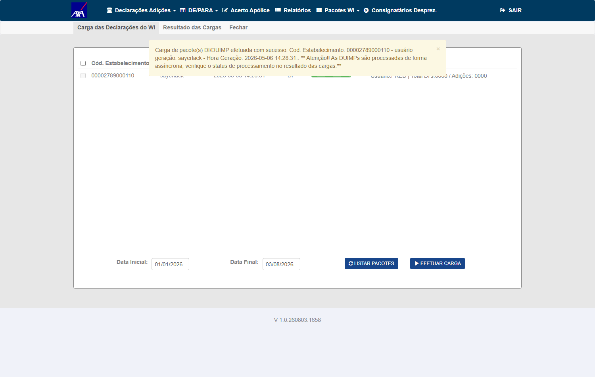
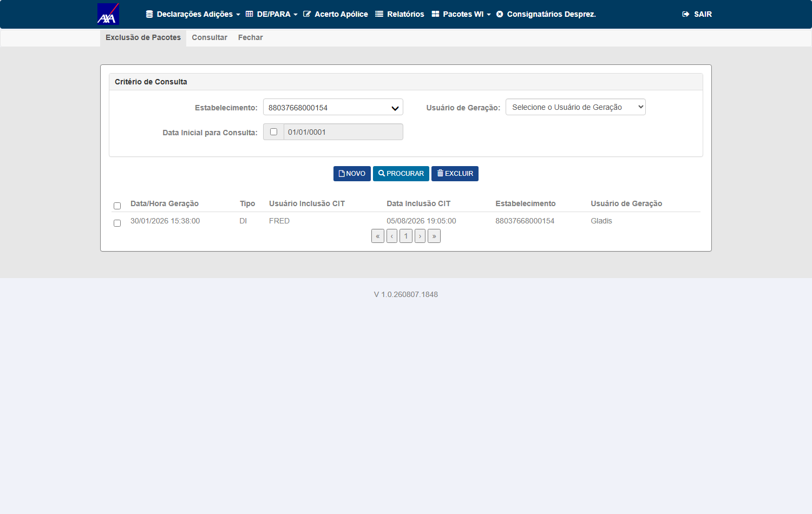
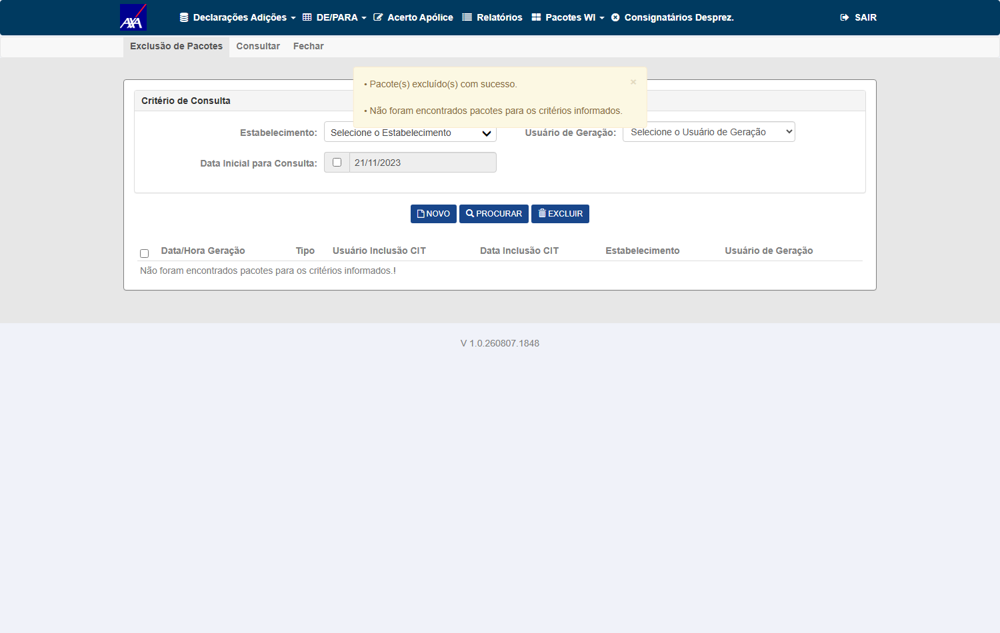
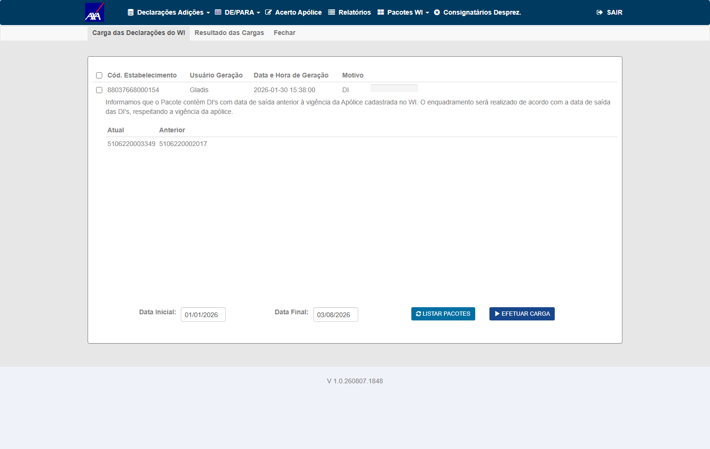
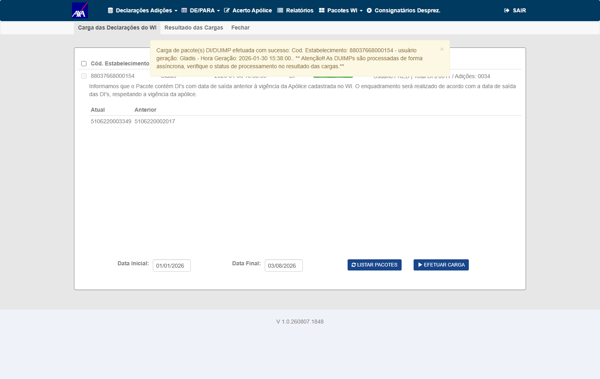

Com o agrupamento, a averbação pode ser por DUIMP inteira, por adição ou por grupo de itens. O CIT/CITWEB precisa olhar a coluna c_nvl_avb para identificar o nível e o JSON t_itn_org_agp para obter o número DUIMP/ADIÇÃO/ITEM que compõe a validação de duplicidade.
Regras (da descrição): nível 'D' → chave = nº DUIMP; nível 'A' → nº DUIMP + Adição; nível 'I' → nº DUIMP + Adição + Item (ou grupo de itens). Nova carga com a mesma numeração no mesmo nível → desprezar por duplicidade. Estorno: se qualquer item que compõe o agrupamento tiver inconsistência, despreza-se todo o agrupamento, não só o item. Em 'I': q_itn_agp = 1 → item individual; ≥ 2 → agrupamento de itens.
Seguradora/módulo/massa herdados do PBI #7582 (AXA HML). Relay marcou o DoR deste card em 100% ✅.
Controlado por AgrupamentoAverbacaoHabilitado /
Ind_DuimpAgrupamentoAverbacao (Diego, #7468). O indicativo está ON na
AXA HML desde 05/08 e o WorkerDUIMP está rodando — a frase anterior deste box
(“desligada e ainda não disponível em HML”) estava vencida.
t_itn_org_agp preenchido em 100% das medidas e
0 chaves duplicadas.c_nvl_avb=‘A’ por SQL argumentando “é entrada, não
saída”. Errado também — a classificação é
do Worker e está sob validação, então semear seria eu definir o
contrato da entrada que está em dúvida.DIProcessamentoController.cs:2863 — chave por nível D→DUIMP,
A→DUIMP+Adição(4) por prefixo, I→+Item(5) exato;
o oráculo é tb_mov_avb_int_cit.u_di LIKE
‘<prefixo>%’; e há 152 pares na AXA HML (linha pendente
cuja DUIMP já tem averbação) esperando apenas que o Worker classifique em
A/I. Não falta caminho de teste — falta classificação
confiável.i_dsc_cnn_smx = N). Injetar a inconsistência à mão seria fabricar a própria saída sob teste. E, pela mesma régua de 12/08, marcar o nível à mão também não vale — não por ser saída, mas porque a classificação do nível está sob validação no Worker: semear inventaria o contrato da entrada. Os quatro CTs bloqueados esperam a mesma coisa.O card estava em #QA-STATUS: BLOQUEADO por defeito #7930 desde 28/07 por falta de massa agregada.
O WorkerDUIMP passou a agregar em 31/07 (45 linhas nível 'D' em AXA HML às 17h, 27 com q_itn_agp > 1 —
411 linhas agregadas ao fim de 03/08, depois das cargas do CT-DUP-001),
então medi o que a massa real permite medir — e o resultado reclassificou 5 dos 6 CTs. Ressalva de 12/08: a parte que dizia “cenário que o produto não produz” para A/I caiu — o Worker não emite A/I hoje, mas o CITWEB trata A/I e a linha de entrada é construível (152 pares na AXA HML), então CT-DUP-003/004/006 voltaram para a executar.
| CT | Situação após a medição |
|---|---|
| CT-DUP-002 · nível 'D' | Invariantes da chave VERIFICADOS em dado real (45/45) — ver detalhe no CT. Substitui o "dado simulado" da validação do dev. A rejeição na recarga segue sem exercício — falta um pacote do WI cujo conteúdo caia sobre linhas já agregadas no nível 'D'; recarregar é possível (o CT-DUP-001 provou o caminho em 03/08 às 17:55) |
| CT-DUP-003 · nível 'A' | Cenário inexistente no produto — nível 'A' = 0 em todas as bases com o schema |
| CT-DUP-004 · nível 'I' | Cenário inexistente no produto — nível 'I' = 0 em todas as bases com o schema |
CT-DUP-006 · nível 'I' + q_itn_agp | Nível 'I' inexistente. A distinção q_itn_agp 1 vs ≥2 existe nas linhas 'D' (1 a 89) e está coerente com o JSON em 45/45 (medição das 17h de 03/08, sobre as 45 linhas existentes naquele momento; o universo fechou o dia em 411) — o CT precisaria ser reescrito para o nível 'D' |
| CT-DUP-005 · estorno | Sem massa: as 411 linhas agregadas têm i_dsc_cnn_smx = 'N' (nenhum componente inconsistente) — medição das 21h de 03/08, depois das cargas da tarde; às 17h eram 45, todas 'N' também. Injetar a inconsistência seria fabricar a saída sob teste |
| CT-DUP-001 · flag OFF | EXECUTADO E APROVADO em 03/08 às 17:55, pelo caminho Pacotes WI → Exclusão de Pacotes → Efetuar Carga — não dependia de pacote novo do WI. Evidências no bloco do CT |
O texto abaixo era a justificativa vigente enquanto o CT-DUP-001 estava marcado BLOQUEADO. Ele foi retratado no mesmo dia: a recarga é possível pelas telas do produto, e o CT executou. Mantido como registro do que se acreditava antes, não como situação corrente.
Por que a recarga não foi feita: a tela Carga das Declarações do WI responde "Não há cargas a serem processadas", inclusive com a janela de geração ampliada para 01/01/2020 – 31/12/2026. Os pacotes nascem na integração WI/Siscomex — é dependência externa real, o único caso em que a skill admite BLOQUEADO. Não é falta de massa nossa: a massa de pendentes existe (1.520 linhas); o que falta é um pacote para reprocessar.
Fui reverificar a tela em vez de herdar o bloqueio, e ela tem caminho manual:
/InterfaceSTREITI/DICarga) expõe
<input type="file" name="ArquivoFiltro"> + botão Importar, além de
LISTAR PACOTES e Efetuar Carga.Também confirmei no banco por que a listagem vem vazia: a
tb_itf_smx_ctl_pct_str tem 63 pacotes, todos com e_itf_str = 'DI' —
nenhum do tipo DUIMP. A tela não está quebrada; simplesmente não existe pacote DUIMP registrado.
Resolvido no mesmo dia, pelo código-fonte (mais confiável que inferir da UI):
ArquivoFiltro não é o pacote — é um arquivo de filtro:
DICargaController.cs:331 faz ArquivoFiltro.SaveAs(... + @"\filtro\Dis.txt").DICargaController.cs:171 consulta
Select cd_estabel, cd_user_gera_in, dt_ho_gera_in, cd_tipo_interface from INTFC no sistema
WI externo, via objWIQuorum.Obter_Query_WI(...) com token — não é tabela nossa. A janela padrão
é DiasCargaWI = 60 dias.tb_itf_smx_ctl_pct_str. Essa tabela é o registro de "já carregado", e os 63 registros
dela são justamente os pacotes já consumidos.⇒ O CT-DUP-001 é executável, e o caminho é pelas telas do próprio produto:
Pacotes WI → Exclusão de Pacotes remove o registro de controle
(PacoteExclusaoController.Excluir → InterfaceSiscomexControlePacoteRecebidoRepository().Excluir),
o pacote volta a ser listado na Carga, e o Efetuar Carga reprocessa as mesmas declarações — que é
exatamente o cenário do CT: recarregar e confirmar o desprezo por duplicidade.
Mantido porque explica a escolha do pacote alvo. O desfecho está no parágrafo seguinte.
Por que ainda não executei: recarregar pacote escreve nas
1.520 linhas de tb_itf_smx_dcl_pnd_dui, que hoje são a massa de
#7802, #7683 e #7804 — inclusive as 45 linhas agregadas validadas em 03/08, que são o
único cenário de nível 'D' existente. Vou executar escolhendo um pacote que não contenha essas 45
(elas pertencem ao pacote 59046788000110 op 19/02/20). Isso é sequenciamento para não destruir massa de
outros cards, não bloqueio.
⇒ Desfecho: o sequenciamento funcionou. A massa não foi destruída — as 45 linhas agregadas
seguiram intactas e a tabela terminou o dia com 411 linhas agregadas (total 1.227 contra 1.520: a diferença é
colapso por agregação, não perda), com 0 chaves duplicadas. As 366 agregadas novas de nível 'D'
viraram massa para #7802 e #7804.
Pacote alvo 00002789000110 · sayerlack · 06/05/2026 14:28 — escolhido porque seu
registro de controle havia sido criado pela própria carga do dia, o que prova que o WI ainda o devolve.
O alvo da 1ª tentativa (angelas, geração 02/03) não era mais devolvido, e foi por isso que ela não executou.
Prova de que o alvo passou pela carga — sem isso, "nada duplicou" seria verdade trivial:
tb_itf_smx_ctl_prc_dui: 8.984 → 9.073; os 89 novos são todos das
17:55 e todos do CNPJ alvo (86 'C' + 3 'D'). Única atividade após 17:45.FRED — o sistema remarcou o pacote como
carregado.d_agp de 17:55:18 a 17:56:38.Resultado: linhas do alvo 86 → 86, total da tabela
1.227 → 1.227 e 0 chaves (declaração, adição, item, apólice) duplicadas
antes e depois. Medido após o processamento assíncrono estabilizar (sts_prc='P' = 0).
'C' = "DUIMP Gravada", não como "Desprezada". O sistema reescreveu as
declarações em vez de desprezá-las. A invariante se sustentou, mas o texto deste CT fala em "confirmar
desprezo" — então eu registrei a diferença em vez de acomodá-la, e levei como pergunta de produto.
Em vez de deixar a pergunta pendente, fui ao fonte. O caminho DUIMP da carga
apaga a declaração antes de reinserir, incondicionalmente e sem checagem de existência —
Domain/InterfaceStreitiDomain.cs:4871-4872:
campoDeclaracao = "EXCLUSAO_DECLARACAO";
new InterfaceSiscomexDeclaracaoPendenteRepository(dbUtility).Exclui(intSmxDlcPnd, true);O passo se chama literalmente EXCLUSAO_DECLARACAO. Logo a ausência de duplicidade
que eu medi vem desse DELETE, não de um "desprezo" — e "DUIMP Gravada" na recarga é o
resultado correto, não um desvio. O que estava impreciso era o texto do CT: o
comportamento a confirmar é "recarregar não duplica, porque substitui", não "a declaração repetida é
ignorada". O veredito APROVADO fica mantido, agora com o mecanismo explicado.
O DELETE filtra apenas pelo número da declaração, sem a apólice
(Repository/InterfaceSiscomexDeclaracaoPendenteRepository.cs:65-68):
DELETE FROM tb_itf_smx_dcl_pnd_dui WHERE u_dcl_imt_smx = @u_dcl_imt_smxJá a checagem de existência análoga, usada por outra tela, filtra por
apólice E declaração (VerificaAdicao, linhas 170–174). Se a mesma DUIMP estivesse
vinculada a duas apólices, recarregar por uma apagaria as linhas da outra.
Medi antes de chamar de defeito: varri as 38 bases HML
(11 com dado DUIMP, incluindo a Mitsui com 5.934 linhas / 1.351 declarações) e o número de declarações vinculadas a
mais de uma apólice é zero em todas. Portanto é risco latente de escopo no código,
não um problema observável — e por isso não abri Bug. Fica registrado para o dev decidir se vale
alinhar o filtro do DELETE ao do VerificaAdicao.
Script:
testes-automatizados/sprint-10-citweb/pbi-7683/ct_dup_001_recarga_pacote.py
Lacuna na evidência do dev (registro factual, não contestação): o comentário de
22/07 reporta CT-DUP-001 como validado no ambiente real com "Lidas 3 / Desprezadas 0 / Inconsistentes 0 / Incluídas 3".
Esse é o resultado de uma primeira carga limpa — com Desprezadas 0 ele não demonstra detecção de
duplicidade, que é justamente o objeto do CT. Os níveis D/A/I foram validados com dado simulado + testes
unitários (8/8 verdes), o que cobre a lógica, mas não o comportamento com dado do Worker.
Achado de cobertura de deploy (vale para #7802 · #7682 · #7930): o schema de agrupamento existe em apenas 4 de 38 bases HML — 23 têm a tabela sem as colunas e 11 não têm a tabela.
In scope: validação de duplicidade por nível de agrupamento (D/A/I) usando c_nvl_avb + t_itn_org_agp; regra de estorno do agrupamento inteiro; distinção item individual vs. grupo via q_itn_agp; regressão flag off.
Out of scope: soma de valores monetários (PBI #7682); interpretação base das colunas (PBI #7468); geração das linhas agregadas (WorkerDUIMP).
Pré-requisitos:
ROT_AUTO / •••••• (senha no .env); módulo Interface WI/Siscomex → Declarações Adiçõest_itn_org_agp preenchido existem
(411 linhas de nível 'D', NULL em 0 de 45 na conferência das 17h) — mas somente no nível 'D':
'A' e 'I' não são emitidos pelo Worker em 38 bases HML — mas são tratados pelo CITWEB, e a linha de entrada é construível pelo QA (ver box do topo, 12/08); e a
capacidade de recarregar o mesmo pacote está provada (CT-DUP-001, via Pacotes WI → Exclusão de Pacotes → Efetuar Carga)tb_itf_smx_dcl_pnd_duiGarantir que, com agrupamento desligado, a duplicidade continua sendo detectada pela chave completa DUIMP/ADIÇÃO/ITEM — regressão zero.
(declaração, adição, item, apólice) duplicadas.00002789000110 · sayerlack · 06/05/2026 14:28O caminho de recarga é pelas telas do próprio produto: Pacotes WI → Exclusão de Pacotes remove o registro de controle, o pacote volta a ser listado em Carga das Declarações do WI e o Efetuar Carga reprocessa as mesmas declarações. Banner de sucesso "Carga de pacote(s) DI/DUIMP efetuada com sucesso" citando somente o pacote alvo; protocolo tb_itf_smx_ctl_prc_dui 8.984 → 9.073, com os 89 novos todos das 17:55 e todos do CNPJ alvo — a prova de que o alvo passou pela carga, sem a qual "nada duplicou" seria verdade trivial.
Medido após o processamento assíncrono estabilizar (sts_prc='P' = 0), não em 20 segundos como na tentativa anterior. Script: testes-automatizados/sprint-10-citweb/pbi-7683/ct_dup_001_recarga_pacote.py.
00002789000110 · sayerlack (geração 06/05/2026 14:29) com registro de controle criado por FRED em 03/08 17:24 — é esse registro que impedia a listagem na Carga
00002789000110 / sayerlack / 2026-05-06 14:28:31), janela 01/01/2026–03/08/2026, com LISTAR PACOTES e EFETUAR CARGA
Usuário: FRED | Total DIs: 0000 / Adições: 0000 — isso não significa "a carga não processou nada". Os contadores DI=/Adi= do Resultado das Cargas não contemplam nem separam DUIMP (ver a ressalva do CT-DUP-002); além disso, a carga é assíncrona e a tela é pintada antes do processamento terminar. A prova de que o alvo passou pela carga é o protocolo tb_itf_smx_ctl_prc_dui 8.984 → 9.073, com os 89 novos todos das 17:55 e todos do CNPJ alvoA regra diz que no nível 'D' a chave de duplicidade é a DUIMP inteira. Isso tem uma consequência verificável sem simular nada: se a chave é a DUIMP, não pode existir mais de uma linha 'D' para a mesma DUIMP. Medido:
| Invariante | Medição |
|---|---|
| 1 linha por DUIMP no nível 'D' | 45 linhas · 45 DUIMPs distintas · 0 DUIMP com mais de uma linha → nenhuma duplicidade admitida ✓ |
t_itn_org_agp e c_hsh_agp presentes | NULL em 0 de 45 · 45 hashes distintos (1 por linha) ✓ |
q_itn_agp coerente com o JSON | 45/45 — q_itn_agp = soma dos itens de todas as adições do t_itn_org_agp, sem item repetido dentro do agrupamento ✓ (faixa medida: 1 a 89 itens) |
Exemplo da estrutura conferida — DUIMP 26BR00000875210, q_itn_agp = 89:
[{"adicao":"001","itens":[1..70]},{"adicao":"002","itens":[71..78]},{"adicao":"003","itens":[79..83]},{"adicao":"004","itens":[84..89]}]
→ 70+8+5+6 = 89, casando exatamente.
Nota de método: a primeira conferência acusou divergência porque contou o tamanho da lista raiz (4 = nº de adições) em vez de somar os itens. O erro era do meu contador, não do sistema — corrigido antes de qualquer registro de defeito.
Em 03/08 este passo não pôde rodar porque as 45 linhas de nível 'D' pertenciam a um pacote que nem constava no controle (tb_itf_smx_ctl_pct_str) — não havia como liberá-lo para recarga. Medido de novo em 09/08: a base foi para 678 linhas 'D' e passaram a existir 3 pacotes no controle cujo CNPJ tem linhas agregadas. Escolhi o mais forte.
| Alvo | Por que este |
|---|---|
CNPJ 88037668000154 · usuário Gladis · geração 30/01/2026 15:38 | 4 DUIMPs, todas em nível 'D' (26BR00000083403, 26BR00000455122, 26BR00000530256, 26BR00000583228), agregadas em 05/08 19:05 — e o pacote está no controle, logo é liberável |
Roteiro: Pacotes WI → Exclusão de Pacotes (libera o controle) → Carga das Declarações do WI → marcar somente a linha do alvo → Efetuar Carga. Pré-condição conferida no banco: Ind_DuimpAgrupamentoAverbacao = 'S'. ⚠️ Não confundir com Ind_Agrupamento_Averbacao_Duimp, que é outra chave e está em 'N'.
| Invariante do nível 'D' | Antes | Depois |
|---|---|---|
| linhas 'D' do alvo / DUIMPs distintas | 4 / 4 | 4 / 4 |
| DUIMPs com mais de uma linha 'D' | 0 | 0 |
| chaves granulares (decl, adição, item, apólice) duplicadas | 0 | 0 |
| total de pendentes / agregadas na base | 678 / 678 | 678 / 678 |
⛔ Por que isto não é uma verdade trivial. "Nada mudou" só prova desprezo se o pacote tiver passado pela carga — foi exatamente assim que a 1ª execução do CT-DUP-001 se enganou em 03/08. Aqui a passagem está provada por três vias independentes: 7 registros no protocolo do alvo hoje; a tela devolvendo "Carga de pacote(s) DI/DUIMP efetuada com sucesso: Cod. Estabelecimento: 88037668000154 — usuário geração: Gladis — Hora Geração: 2026-01-30 15:38:00" com Total DI's: 0011 / Adições: 0034; e o registro de controle do alvo indo de 1 → 0 → 1 (liberado, recarregado, restaurado).
Por que a invariante aqui é mais forte que a do CT-DUP-001. No nível 'D' a chave de duplicidade é a DUIMP inteira. O critério do CT-DUP-001 ("nenhuma chave decl+adição+item duplicada") não pegaria uma segunda linha 'D' da mesma DUIMP com adição/item diferentes. Por isso este CT afirma o mais restrito: cada DUIMP alvo continua com exatamente uma linha 'D'.




Os passos 2–3 do CT ("carregar outro pacote com a mesma DUIMP" / "confirmar desprezo") exigem
recarregar um pacote que contenha uma DUIMP já agregada no nível 'D'. Recarregar é
possível — o CT-DUP-001 provou o caminho em 03/08 às 17:55 (Pacotes WI → Exclusão de Pacotes → Efetuar Carga).
O que ainda não existe é um pacote do WI cujo conteúdo caia sobre as linhas agregadas de nível 'D', que é o
cenário específico deste CT.
O protocolo de carga (Resultado das Cargas) também não serve como prova: ele reporta apenas
DI= e Adi= carregados, sem separar desprezo por duplicidade — as duas cargas de 28/07 mostram
DI=0000 Adi=00000, o que não distingue "rejeitado por duplicidade" de "pacote vazio". A varredura do domínio de
t_sts_prc (7.201 registros) confirmou que não existe status de duplicidade: a evidência terá de
ser no banco, como foi no CT-DUP-001.
Este CT esteve marcado BLOQUEADO com o texto: "os passos exigem um pacote WI para
recarregar; a tela responde 'Não há cargas a serem processadas', inclusive com a janela ampliada para
01/01/2020 – 31/12/2026; os pacotes nascem na integração WI/Siscomex, fora do CITWEB — é o único caso em que a skill admite
BLOQUEADO". A premissa da origem externa estava certa, mas a conclusão não: o que impedia a recarga era um registro nosso
(tb_itf_smx_ctl_pct_str, 63 pacotes marcados como "já carregado"), na nossa tabela, com tela própria para removê-lo.
Verificar que, num agrupamento nível 'D', a chave de duplicidade é o número da DUIMP: recarregar outro pacote com a mesma DUIMP deve ser desprezado.
Verificar que no nível 'A' a chave é DUIMP + Adição (não precisa do item) — recarga com mesma DUIMP+Adição é desprezada.
| rótulo | veredito sobre o rótulo |
|---|---|
| 1. “CENÁRIO INEXISTENTE” (03–11/08) | errado. Medi nível A/I = 0 em 36 bases e concluí que o cenário não existe. Medição certa, conclusão errada: o cenário de negócio existe, falta massa |
| 2. “A EXECUTAR — massa a criar” (12/08, manhã) | errado também, por outro motivo. Eu ia semear c_nvl_avb=‘A’ por SQL argumentando “é entrada, não saída”. Mas a classificação do nível é do Worker e está sob validação: semear seria eu definir o contrato da entrada que está em dúvida |
| 3. “BLOQUEADO — aguardando o Worker” (12/08) | correto. Dependência externa real — serviço de outro time, em validação. É o único caso em que a regra de HML aceita BLOQUEADO |
DIProcessamentoController.cs:2863 (chave por nível: D→DUIMP, A→DUIMP+Adição(4) por prefixo, I→+Item(5) exato); o oráculo é tb_mov_avb_int_cit.u_di LIKE ‘<prefixo>%’; e há 152 pares na AXA HML (linha pendente cuja DUIMP já tem averbação) prontos para o dia em que o Worker classificar em A/I. O que falta é só a classificação confiável.Verificar que no nível 'I' a chave inclui o item (ou grupo de itens) — via t_itn_org_agp.
| rótulo | veredito sobre o rótulo |
|---|---|
| 1. “CENÁRIO INEXISTENTE” (03–11/08) | errado. Medi nível A/I = 0 em 36 bases e concluí que o cenário não existe. Medição certa, conclusão errada: o cenário de negócio existe, falta massa |
| 2. “A EXECUTAR — massa a criar” (12/08, manhã) | errado também, por outro motivo. Eu ia semear c_nvl_avb=‘A’ por SQL argumentando “é entrada, não saída”. Mas a classificação do nível é do Worker e está sob validação: semear seria eu definir o contrato da entrada que está em dúvida |
| 3. “BLOQUEADO — aguardando o Worker” (12/08) | correto. Dependência externa real — serviço de outro time, em validação. É o único caso em que a regra de HML aceita BLOQUEADO |
DIProcessamentoController.cs:2863 (chave por nível: D→DUIMP, A→DUIMP+Adição(4) por prefixo, I→+Item(5) exato); o oráculo é tb_mov_avb_int_cit.u_di LIKE ‘<prefixo>%’; e há 152 pares na AXA HML (linha pendente cuja DUIMP já tem averbação) prontos para o dia em que o Worker classificar em A/I. O que falta é só a classificação confiável.As 411 linhas agregadas existentes ao fim de 03/08 têm i_dsc_cnn_smx = 'N' —
411/411, nenhum componente inconsistente. A medição das 17h, antes das cargas do CT-DUP-001, dava 45/45 'N':
o universo cresceu 9×, o veredito não mudou. Injetar a inconsistência à mão seria fabricar a saída sob teste.
Regra de estorno: a inconsistência em qualquer item do agrupamento deve desprezar tudo o que compõe aquele agrupamento — não apenas o item.
Verificar que o CITWEB lê q_itn_agp para distinguir item individual (1) de agrupamento de itens (≥2) ao aplicar a duplicidade no nível 'I'.
| rótulo | veredito sobre o rótulo |
|---|---|
| 1. “CENÁRIO INEXISTENTE” (03–11/08) | errado. Medi nível A/I = 0 em 36 bases e concluí que o cenário não existe. Medição certa, conclusão errada: o cenário de negócio existe, falta massa |
| 2. “A EXECUTAR — massa a criar” (12/08, manhã) | errado também, por outro motivo. Eu ia semear c_nvl_avb=‘A’ por SQL argumentando “é entrada, não saída”. Mas a classificação do nível é do Worker e está sob validação: semear seria eu definir o contrato da entrada que está em dúvida |
| 3. “BLOQUEADO — aguardando o Worker” (12/08) | correto. Dependência externa real — serviço de outro time, em validação. É o único caso em que a regra de HML aceita BLOQUEADO |
DIProcessamentoController.cs:2863 (chave por nível: D→DUIMP, A→DUIMP+Adição(4) por prefixo, I→+Item(5) exato); o oráculo é tb_mov_avb_int_cit.u_di LIKE ‘<prefixo>%’; e há 152 pares na AXA HML (linha pendente cuja DUIMP já tem averbação) prontos para o dia em que o Worker classificar em A/I. O que falta é só a classificação confiável.| Critério | CT(s) |
|---|---|
| Regressão flag OFF (chave completa) | CT-DUP-001 |
| Duplicidade nível 'D' (DUIMP) | CT-DUP-002 |
| Duplicidade nível 'A' (DUIMP+Adição) | CT-DUP-003 |
| Duplicidade nível 'I' (DUIMP+Adição+Item/grupo) | CT-DUP-004 |
| Estorno do agrupamento inteiro | CT-DUP-005 |
| q_itn_agp distingue item vs. grupo | CT-DUP-006 |
'D' (invariantes verificados em dado real, 45/45); os níveis 'A'/'I' seguem sem cobertura, e agora com caminho para obtê-la: a massa de entrada é construível e os CTs estão marcados a executar desde 12/08.i_dsc_cnn_smx = 'N' (nenhum componente inconsistente); injetar a inconsistência seria fabricar a saída sob teste.'D' — a massa deixou de ser o obstáculo. O que restou foi a flag (ainda desligada em HML) e o fato de o produto não emitir 'A'/'I'.'D' ou N/A) e CT-DUP-006 (reescrever sobre as linhas 'D') — mesma decisão pendente no #7682.